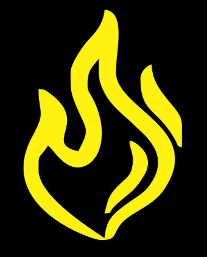
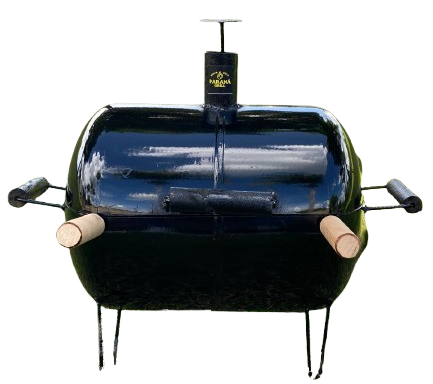

Feito com muito amor e carinho, da nossa familia para a sua!

Do Paraná para todo o Brasil

Sobre Nós
A Paraná Grill nasceu da verdadeira paixão pelo churrasco, com o propósito de levar qualidade, sabor e tradição à sua mesa. Nossa missão é oferecer uma experiência única, combinando o melhor da carne com um atendimento impecável. Somos uma equipe unida, que se considera uma verdadeira família, e temos a dedicação de entregar excelência em cada produto que oferecemos. Cada detalhe do nosso processo de produção é cuidadosamente pensado e executado de forma artesanal, garantindo um sabor autêntico e inesquecível. Há mais de 10 anos, nos dedicamos a criar momentos especiais para nossos clientes, proporcionando uma experiência gastronômica repleta de sabor, calor humano e, claro, a tradição do churrasco. Na Paraná Grill, cada pedaço de carne é um reflexo do nosso compromisso com a qualidade e a paixão pelo que fazemos.
Cuidados com a Churrasqueira
- Mantenha a churrasqueira em local arejado e longe de materiais inflamáveis.
- Utilize carvão de qualidade para evitar fumaça excessiva e mau cheiro.
- Não use líquidos inflamáveis, como álcool ou gasolina, para acender o fogo.
- Sempre tenha um extintor de incêndio ou um balde de areia por perto.
- Após o uso, certifique-se de apagar completamente as brasas antes de descartar as cinzas.
- Limpe a grelha após cada uso para evitar acúmulo de gordura e resíduos.
- Mantenha crianças e animais de estimação afastados da churrasqueira durante o uso.
- Use luvas térmicas e utensílios apropriados para evitar queimaduras.
- Evite usar churrasqueiras em locais fechados sem ventilação adequada.
Contato